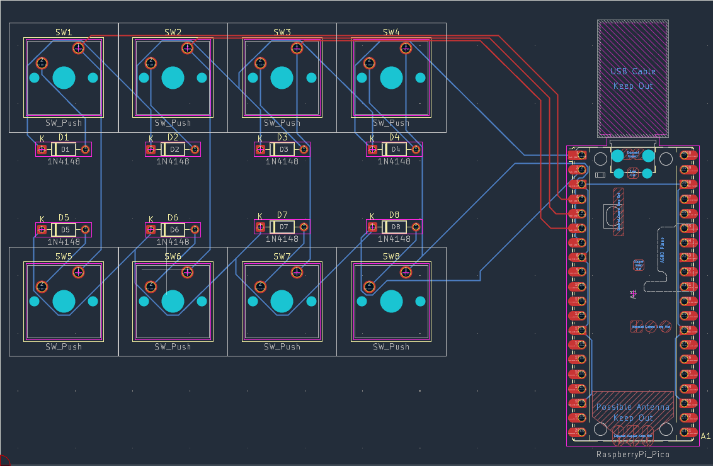

Macro-Pad Keyboard
A custom macro pad on a 2-layer KiCad PCB with an integrated Raspberry Pi Pico.

Overview
I designed this macro pad to turn keyboard shortcuts into single key presses. It's an 8-key board built around a Raspberry Pi Pico that presents itself to the computer as a standard keyboard, so it works without any extra software. The project covers the full hardware design: schematic capture, PCB layout, and design verification in KiCad.
Hardware design
- A 2x4 mechanical key matrix on a 2-layer PCB with an integrated Raspberry Pi Pico.
- Every switch has its own 1N4148 diode, which isolates the keys from each other and prevents ghosting when several keys are pressed at once.
- Rows and columns each get their own pin, so eight keys need only six GPIO pins: two rows and four columns.
- Traces were routed by hand, then checked against KiCad's electrical and design rules.


Firmware
The Pico drives the rows as outputs, strobing them one at a time in a loop, while the columns are read as inputs. When a key is pressed, current flows through its diode into the row it belongs to, which tells the microcontroller exactly which key was pressed so it can send the matching shortcut.
Results
The fabrication process has begun, I need to add the conductive wiring from the second layer of the board to the back of the board so all connections are in place. The next step will be to aquire the necessary components and attach them to the board, completing the physical connections. I will also have to wire any necessary components. The final step would be to fully formulate and test the code, ensuring that the macropad works and marking the completion of this project.
- Schematic capture and PCB layout are complete in KiCad.
- All electrical rule checks and design rule checks pass, confirming the hand-routed traces and a production-ready 2-layer layout.
- In the design, the diode matrix resolves the routing and prevents ghosting between keys.
- Physical fabrication has not been completed.
Next steps
- Write the firmware that sends each key's shortcut.
- Complete fabrication and assembly of the PCB.
- Later: Expand and add more shortcuts and a printed enclosure to house and protect the board.